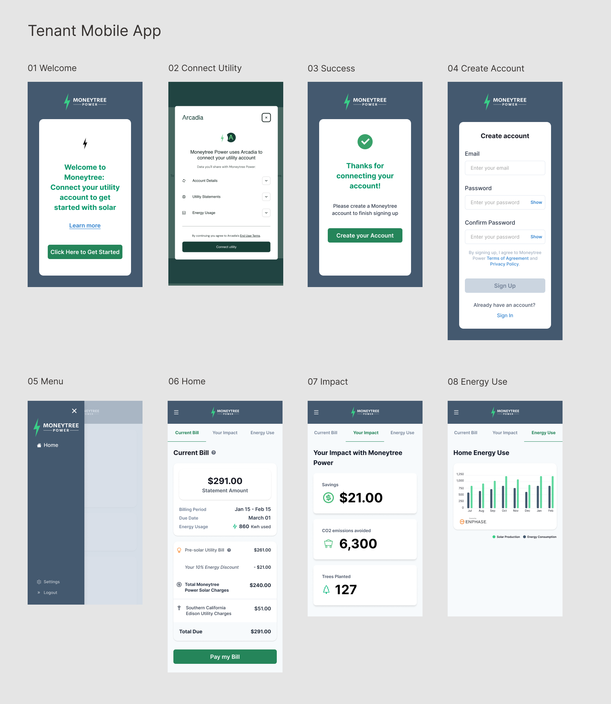
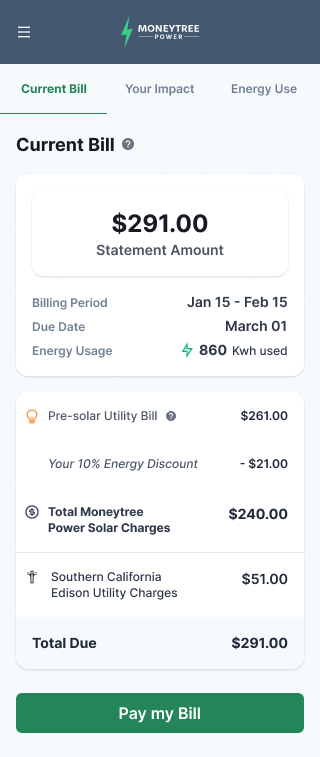
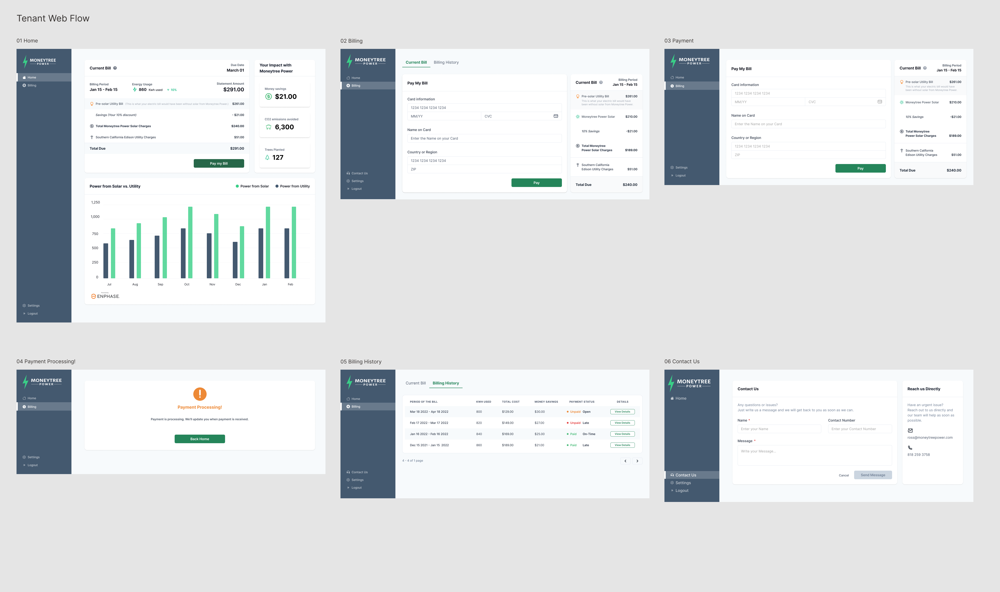
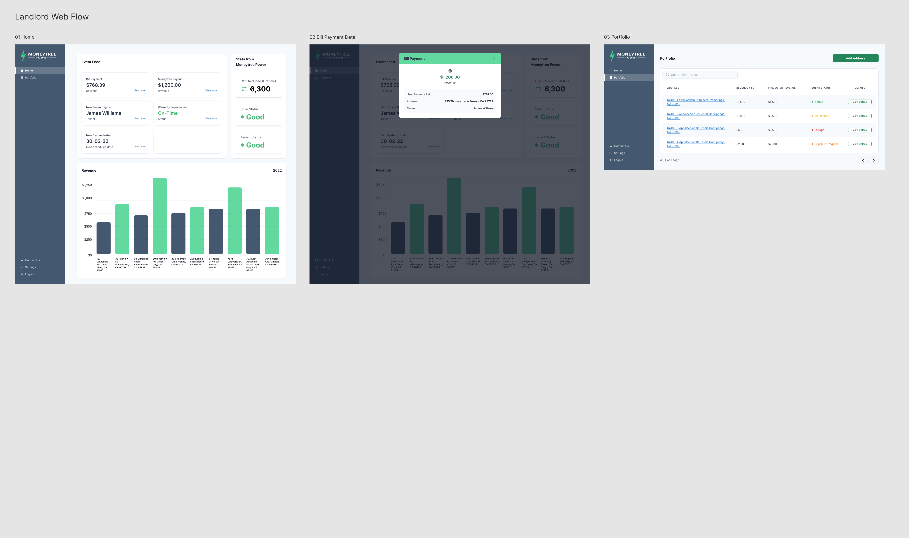
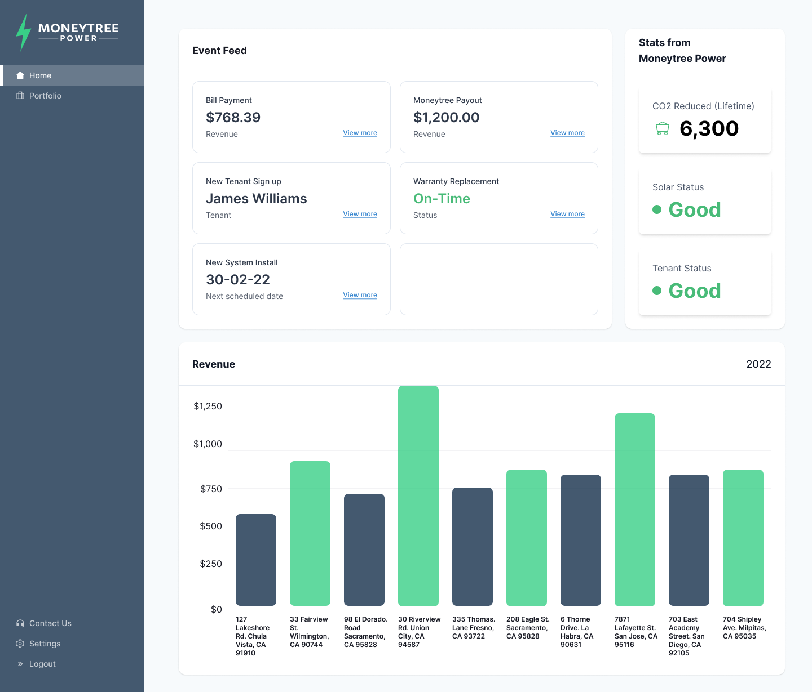
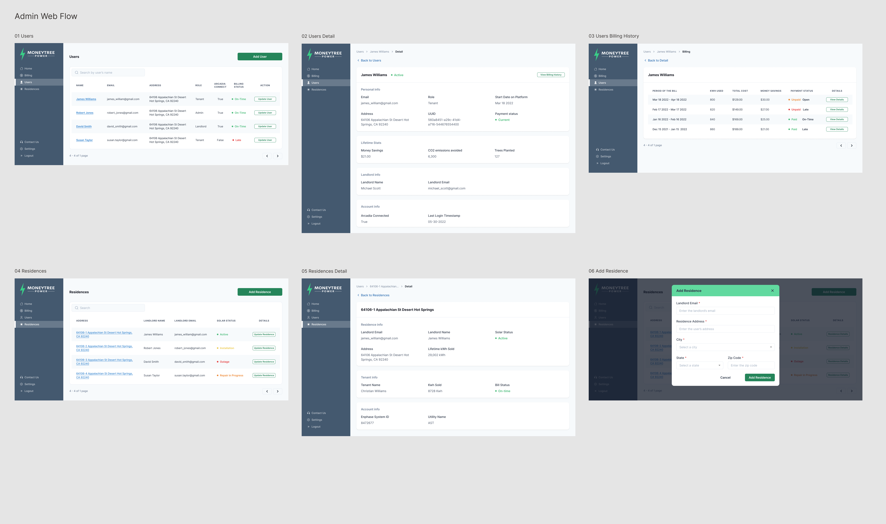
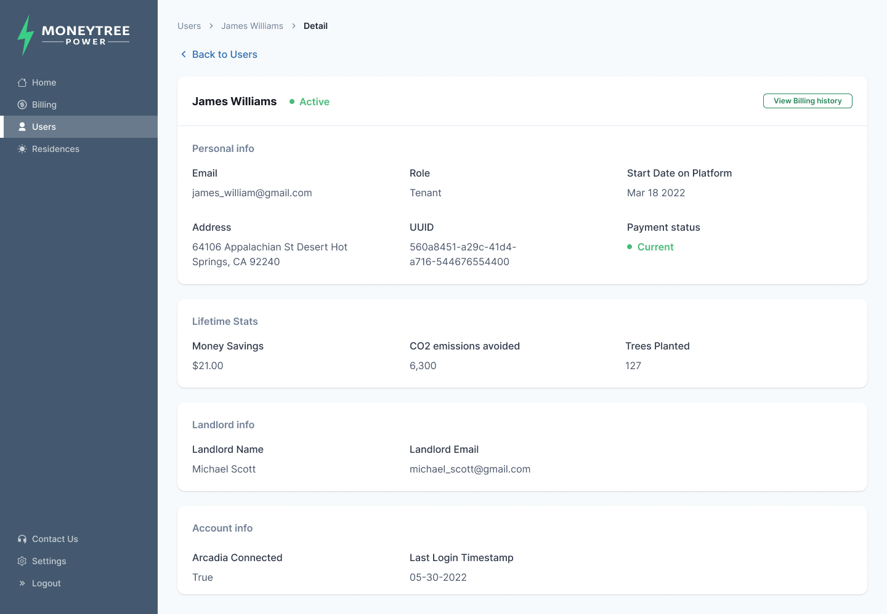

MoneyTree
Designing a multi-sided clean energy platform connecting tenants, landlords, and operations across web and mobile experiences.
Product Designer
Clean Energy Platform
Web · Mobile
0→1 · Concept to MVP
01
The Challenge
MoneyTree needed to turn an early-stage clean energy business model into a connected digital product serving multiple users with very different goals.
Tenants needed to understand utility bills, solar savings, payments, energy usage, and environmental impact. Landlords needed visibility into properties, revenue, tenant activity, and solar system performance.
At the same time, internal teams needed operational tools to manage users, residences, billing history, utility connections, and account relationships.
The design challenge was to create three distinct experiences around the same underlying energy and billing ecosystem without losing clarity or consistency.
02
Goal & My Role
The goal was to design and deliver an MVP that could support real customers in California while giving landlords and internal teams the tools required to operate the service.
I joined the project at an early stage as Product Designer, working directly with the CEO and CTO to understand the business model, customer needs, operational requirements, and technical constraints.
I helped define and prioritize core product flows, translated the existing brand into a digital experience, and established the initial design system across web and mobile.
03
From Business Model to Product
The project began with an existing brand and early product ideas, but the experience still needed structure. I worked with the founders to translate operational rules around solar energy, utility billing, savings, discounts, payments, residences, and user relationships into clear product flows.
Formal user research was not part of this MVP phase. Product understanding came primarily from collaboration with founders and business stakeholders.
Understand
Business model, users, energy and billing rules
Prioritize
Core MVP experiences by user type
Structure
Information architecture and connected workflows
Design
UX, UI, responsive and role-based patterns
Deliver
MVP for real customers and operations
04
One Platform, Three Experiences
MoneyTree was not a single customer dashboard. The same energy, billing, residence, and account data needed to support three interconnected perspectives.
Tenant
Understand bills, connect a utility account, make payments, monitor energy usage, track savings, and see environmental impact.
Landlord
Monitor revenue, tenant activity, solar status, property performance, installation events, and portfolio-level information.
Admin
Manage users, residences, billing history, account relationships, utility connections, roles, and operational status.
Shared System
Maintain consistent product logic and visual patterns while adapting information hierarchy and actions to each user's responsibilities.
05
Tenant Experience
The tenant journey connected onboarding, utility integration, billing, payments, energy usage, savings, and environmental impact into one customer-facing experience.
The mobile flow began by helping tenants connect their utility account, create a MoneyTree account, and then move into a home experience organized around three key questions: what do I owe, what is my impact, and how much energy am I using?

Making the Bill Understandable
One of the most important customer-facing design problems was explaining how the traditional utility bill, MoneyTree solar charges, savings, and utility charges related to the final amount due.
The interface separated these components into a clear hierarchy so customers could understand both what they were paying and where their savings came from.

Designing Across Mobile & Web
The tenant experience also extended to web, where the same financial and energy information could take advantage of a larger canvas for billing details, payment workflows, billing history, and energy comparisons.
Rather than simply scaling the mobile UI, the information hierarchy adapted to the available space while preserving the same underlying mental model and product language.

06
Landlord Experience
Landlords needed a fundamentally different view of the same ecosystem. Their experience focused less on individual bills and more on property performance, revenue, tenants, installations, payouts, and system health.
The landlord dashboard brought recent events and operational signals together with portfolio-level financial and solar information so users could quickly understand what required attention.

Portfolio Performance at a Glance
The home dashboard combined revenue with operational events, tenant activity, solar status, system installations, and environmental indicators.
The goal was to surface both financial performance and property health without forcing landlords to navigate through multiple disconnected systems.

07
Admin Experience
Behind the customer and landlord experiences, the Admin App provided the operational tools required to manage the system.
Administrators could work across users, roles, billing, residences, utility connections, solar status, account relationships, and historical information.

Designing for Operational Density
Admin interfaces required higher information density than the customer-facing product while still making relationships between users, landlords, residences, payments, and utility accounts understandable.
User Detail organized personal information, payment status, environmental impact, landlord relationships, and account connections into a structured operational view.

08
Making Energy Data Understandable
Across the product ecosystem, one recurring design challenge was translating unfamiliar relationships between solar energy, utility usage, discounts, savings, payments, and environmental impact into information users could quickly understand.
I focused on clear summaries, comparisons, status indicators, and role-specific language rather than exposing the underlying business complexity.
Billing Clarity
Made charges, balances, payment status, and billing history easier to understand.
Savings
Made financial benefits visible through clear savings and discount information.
Energy Comparison
Structured solar production and utility consumption into understandable visual comparisons.
Environmental Impact
Translated energy usage into more tangible indicators such as CO₂ emissions avoided and trees supported.
09
Building the Product System
I established the initial design system by translating MoneyTree's existing brand into reusable digital components and interaction patterns across tenant, landlord, and administrative experiences.
As the team refined business rules around billing, discounts, savings, user relationships, residences, and solar-versus-utility information, I iterated on flows and information presentation to keep the ecosystem understandable and consistent.
10
Launch & Outcome
The MVP was delivered and launched with real customers in California.
The resulting ecosystem supported customer billing, payments, energy information, landlord portfolio management, and internal operational workflows across web and mobile.
The product was also used as part of the company's investment efforts and later evolved under a new name.
11
What I Learned
Design for Multiple Roles
Strengthened my ability to create distinct experiences around shared data and business systems.
Translate Complexity
Learned how to turn complex energy, billing, and operational rules into clear user experiences.
Think in Systems
Developed deeper experience connecting B2C, B2B, and administrative workflows within a single product ecosystem.
Brand to Product
Strengthened my ability to extend an existing brand into a reusable cross-platform design system.